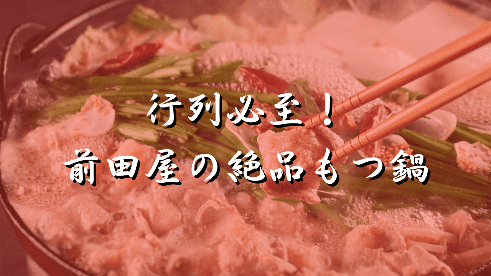
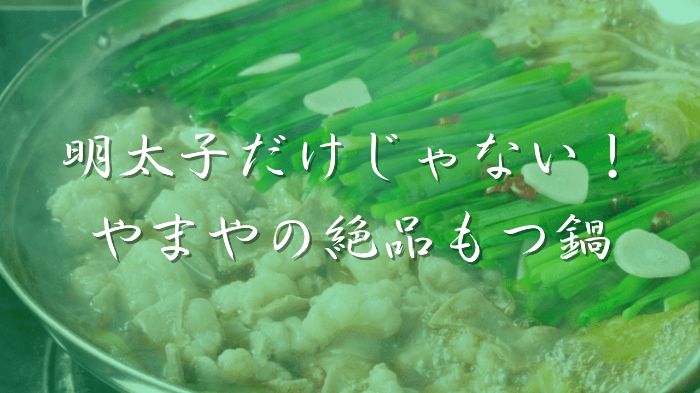
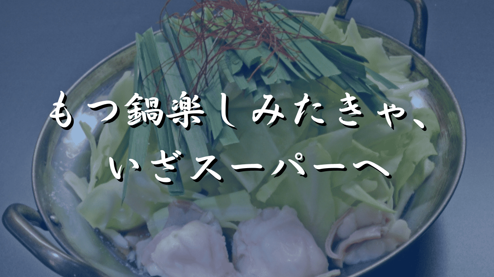

WORKSこれまでに書いた記事

もつ鍋 前田屋｜予約なしでも安心して楽しむ方法
予約の有無や待ち時間、店舗情報を、行く前に知りたい順にまとめました。
（新しいタブで開きます）
もつ鍋 やまや｜取り寄せ＆テイクアウトの全手順解説！
取り寄せやテイクアウトの方法、店舗情報、作り方を順を追ってまとめました。
（新しいタブで開きます）
もつ鍋｜スーパーを活用し手軽で本格的に楽しむおすすめの方法
スーパーでもつが見つからないときの買い方と、手軽に楽しめるセット商品を紹介しました。
（新しいタブで開きます）※ お店への取材記事ではなく、公開されている情報や口コミをもとに書いた記事です。記事は新しいタブで開きます。
SERVICEサービス内容と進め方
飲食店オーナーさんの想いを聞き取り、ブログ記事にまとめます。
① お話を聞く
お店のことや、伝えたい想いを伺います。
② 記事を書く
伺った内容をもとに、読む人に伝わる記事を書きます。
③ 確認・修正
内容をご確認いただき、必要に応じて直します。
料金・納期 記事の内容や本数を伺ったうえで、お見積りをお出しします。
PROFILEプロフィール
松田 泰地ブログ記事作成代行
- コンビニエンスストアで13年勤務
- もつ鍋ブログを2年運営
- トレンドブログを6年運営
コンビニエンスストアの現場で13年、お客様と向き合ってきました。いまは、もつ鍋を中心にグルメ記事を書いています。お店の方から伺った想いを、読む人に伝わる言葉にすることを大切にしています。